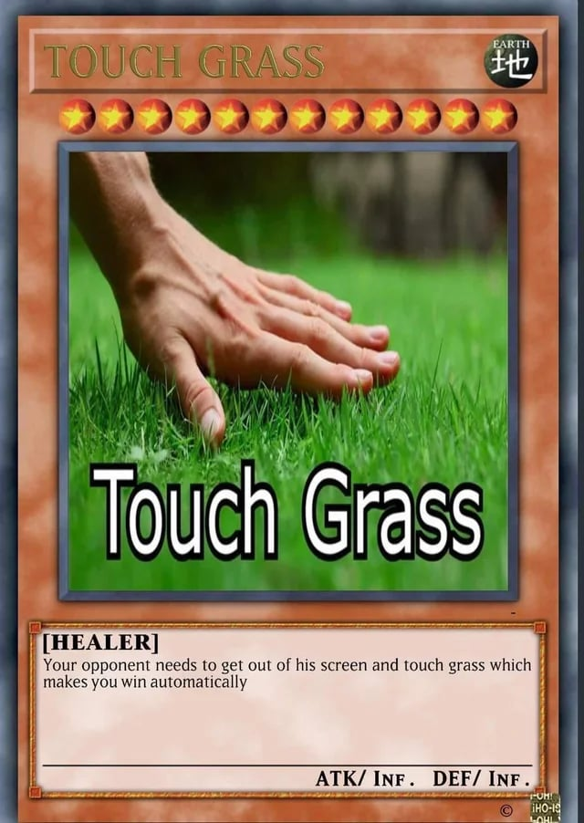

@whooslizi

Hello, I'm whooslizi
Projects
I don't have any projects I'm confident enough to feature here just yet. Every single one was made for my own usages, and well, most, I mean all of them are poorly coded. If you still want to burn your eyes, take a look at my GitHub.
My socials


